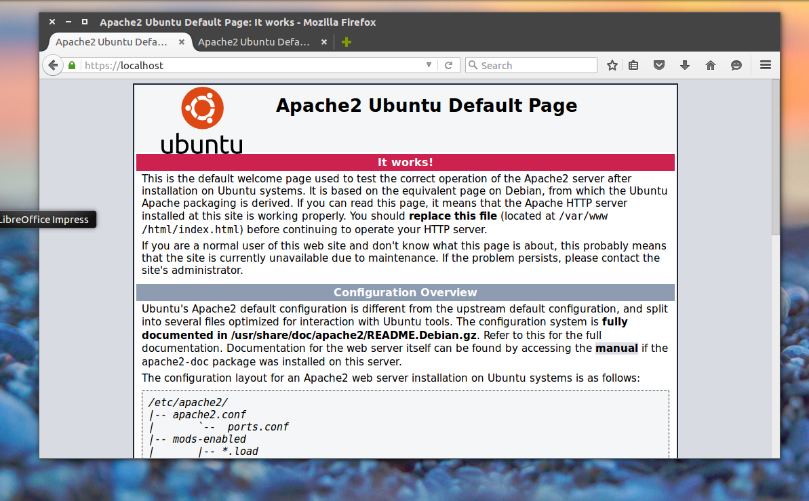

Установка LAMP Ubuntu 16.04
Сервер Обновлено: 25 июля, 2020 77 admin
Linux - отличная платформа для создания и тестирования веб-сайтов. Учитывая, что большинство веб-серверов используют Linux в качестве операционной системы, то и тестировать сайты лучше в этой системе, с использованием тех же инструментов, даже если это домашний компьютер. Намного удобнее иметь всё под рукой и не боятся повредить сайт на сервере.
Сегодня мы поговорим о LAMP. На самом деле это не программа, это стек программ с открытым исходным кодом, необходимых для работы веб-сайтов. Название формальное и происходит от первых букв названий входящих туда программ: Linux, Apache, MySQL, PHP - а вместе LAMP, это те программы, которые нужно установить и настроить, для того, чтобы начать разрабатывать сайты или веб-приложения на домашнем компьютере. Linux - тут всё понятно, это наша операционная система, Apache - веб-сервер, MySQL - программа для управления базами данных, PHP - на данный момент самый популярный язык для веб-программирования.
В этой инструкции будет рассмотрена установка LAMP Ubuntu 16.04. Мы рассмотрим, как установить Apache 2.4, MariaDB в качестве базы данных MySQL и самую новую версию языка PHP 7. Для начала будет выполнена установка Apache Ubuntu 16.04, так как это главный компонент всей системы, а уже потом подключим к нему дополнительные компоненты.
Apache - это кроссплатформенный веб-сервер с открытым исходным кодом. Он поддерживает все необходимые функции веб-сервера, включая CGI, SSL, и виртуальные домены.
Установить Apache в Ubuntu очень просто, для этого достаточно выполнить:
sudo apt-get install apache2
После установки добавим программу в автозагрузку:
sudo systemctl enable apache2
И запустим веб-сервер сейчас:
sudo systemctl start apache2
Теперь можно проверить, что получилось, откройте браузер и наберите в адресной строке localhost:
Как видите, установка apache ubuntu 16.04 завершена, и веб-сервер уже работает. Но это ещё не всё. Если у вас один сайт, который нужно тестить на локальной машине, то всё отлично. Но если их несколько, то собирать их все в подпапках веб-сервера не совсем удобно, да и не все движки нормально относятся к этому. Потому давайте рассмотрим, как настроить виртуальные хосты.
Создайте новую папку для нашего виртуального хоста:
sudo mkdir /var/www/test.site
Дадим права на доступ:
sudo chmod -R 755 /var/www
Необходимо создать небольшой файл, index.html, чтобы он открылся, когда вы запустите этот сайт:
sudo vi /var/www/test.site/public_html/index.html
<html>
<head>
<title>Welcome to Test!</title>
</head>
<body>
<h1>Success! Virtual host is working!</h1>
</body>
</html>
Теперь можно добавлять виртуальный хост, для этого создайте файл и наполните его содержимым:
sudo vi /etc/apache2/sites-available/test.site.conf
<VirtualHost *:80>
ServerName test.site
ServerAlias www.test.site
ServerAdmin webmaster@localhost
DocumentRoot /var/www/test.site/public_html
ErrorLog ${APACHE_LOG_DIR}/error.log
CustomLog ${APACHE_LOG_DIR}/access.log combined
</VirtualHost>
Вот что значат некоторые строки:
Теперь сохраните файл, далее нужно активировать наш хост:
sudo a2ensite test.site.conf
Перезапускаем веб-сервер:
sudo systemctl restart apache2
Теперь необходимо завернуть трафик с этого домена на локальный сервер, для этого добавьте строчку в /etc/hosts:
sudo vi /etc/hosts
127.0.0.1 test.site
Откройте браузер и в адресной строке наберите test.site:
Кроме того, мы можем включить поддержку ssl для нашего веб-сервера. Для этого выполните:
a2enmod ssl
a2ensite default-ssl
После этого нужно будет перезагрузить веб-сервер:
sudo systemctl restart apache2
Теперь вы можете проверить работу SSL, набрав адрес https://localhost.
Браузер не доверяет нашему сертификату, поскольку он самоподписанный, но мы можем спокойно добавлять его в исключения, это ведь наш сертификат. Теперь работает:

Без языка программирования установка и настройка LAMP в Ubuntu будет не завершена. PHP - это самый популярный язык программирования в веб. Его название - это рекурсивный акроним (PHP: Hypertext Preprocessor). Кроме того, что этот язык используется в веб, его можно применять как язык общего назначения, язык сценариев.
Установка PHP 7 в Ubuntu 16.04 выполняется следующей командой:
sudo apt-get install php7.0-mysql php7.0-curl php7.0-json php7.0-cgi php7.0 libapache2-mod-php7.0
Если вы хотите установить все доступные модули PHP, чтобы в будущем не было проблем, можно выполнить команду:
sudo apt-get install php*
После завершения установки проверим версию PHP:
php -v
Теперь пора проверить, как всё работает. Для этого создайте файл со следующим кодом на PHP:
sudo vi /var/www/test.site/public_html/test.php
<?php phpinfo(); ?>
Осталось перезапустить Apache2:
sudo systemctl restart apache2
Откройте ещё раз наш сайт в браузере, на этот раз нас интересует страница test.php:
Установка PHP 7 в Ubuntu 16.04 завершена, и всё очень хорошо работает. Но нужно ещё кое-что настроить, а именно включить отображение ошибок в PHP. Иначе при возникновении ошибки вы увидите просто пустую страницу. Для этого откройте файл /etc/php/7.0/apache2/php.ini, найдите строку display_errors = Off и поменяйте off на on:
vi /etc/php/7.0/apache2/php.ini
Теперь переходим к следующему этапу.
Базы данных используются сейчас почти в каждом движке интернет сайтов. Поэтому важно иметь на своём компьютере и это программное обеспечение. Установка LAMP Ubuntu 16.04 не может обойтись без базы данных, но в этой инструкции вместо MySQL мы будем использовать её улучшенную и оптимизированную версию - MariaDB. Это очень надёжный и масштабируемый сервер SQL со множеством улучшений и усовершенствований.
Установка MariaDB Ubuntu 16.04 выполняется с помощью команды:
sudo apt-get install mariadb-server mariadb-client
Когда установка MySQL Ubuntu 16.04 будет завершена, мы можем переходить к настройке базы данных, для этого выполните команду:
sudo mysql_secure_installation
Сначала необходимо ввести текущий пароль root: просто нажимаем Enter, поскольку шифр ещё не задан:
Далее нажимаем у, чтобы задать новый пароль:
Затем отключаем гостевые аккаунты:
Отключаем удалённый доступ через root:
Удаляем тестовые базы данных:
Перезаписываем таблицы привилегий:
Вот и всё, установка MySQL в Ubuntu 16.04 завершена, и база данных готова к работе.
Установка Phpmyadmin в Ubuntu 16.04
Установка и настройка LAMP в Ubuntu 16.04 также будет включать инсталляцию Phpmyadmin. Phpmyadmin - это бесплатный инструмент с открытым исходным кодом для реализации веб-интерфейса управления базами данных MySQL. Он доступен в официальных репозиториях Ubuntu 16.04, установим его с помощью команды:
sudo apt-get install phpmyadmin php-mbstring php-gettext
Но тут уже во время установки потребуется немного конфигурации. Сначала нужно выбрать наш веб-сервер:
Для перемещения по пунктам используйте стрелки вверх/вниз, для выбора - пробел, для переключения - Tab.
В следующем окне мастера нам предлагают настроить базу данных Рhpmyadmin, соглашаемся:
Вводим пароль, который будет использован для подключения Рhpadmin к базе данных:
Подтверждение пароля:
По умолчанию в MariaDB есть плагин под названием unix_socket, он предотвращает вход под именем пользователя root в Рhpmyadmin или с помощью других TCP-интерфейсов. Для его отключения выполните:
sudo -i
echo "update user set plugin='' where User='root'; flush privileges;" | mysql -u root -p mysql
Когда установка Рhpmyadmin в Ubuntu 16.04 будет завершена, откройте браузер и наберите в адресной строке localhost/phpmyadmin:
Всё работает, для доступа к базе данных вы можете ввести логин root и его пароль, который задали на этапе настройки MySQL:
Вот и всё: установка LAMP в Ubuntu 16.04 завершена успешно. Теперь всё работает, и вы можете приступать к созданию своих проектов.
Похожие записи:
Установка и настройка сервера Apache
29 июня, 2016